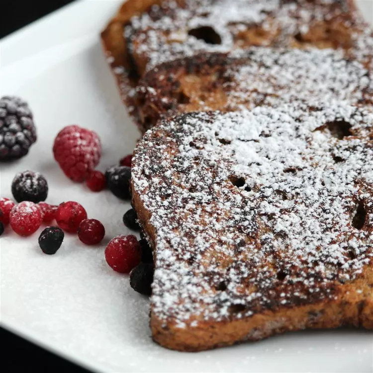

Description
An easy-to-make gingerbread-flavored French toast that gives you that warm, fuzzy holiday feeling. Serve with butter and syrup or brown sugar.
Ingrediants
- ½ cup milk
- 2 eggs
- tablespoon white sugar
- 2 teaspoons rum extract
- 1 teaspoon salt
- ¼ teaspoon ground cinnamon
- ¼ teaspoon ground nutmeg
- ¼ teaspoon ground cloves
- ⅛ teaspoon ground ginger
- 4 slices white bread
- 1 tablespoon butter, or as needed
Steps
- Whisk milk, eggs, sugar, rum extract, salt, cinnamon, nutmeg, cloves, and ginger together in a bowl. Dip each bread slice into the egg mixture, turning to coat both sides.
- Melt butter in a non-stick skillet over medium heat. Add bread slices in a single layer and cook until golden brown, about 3 minutes per side.